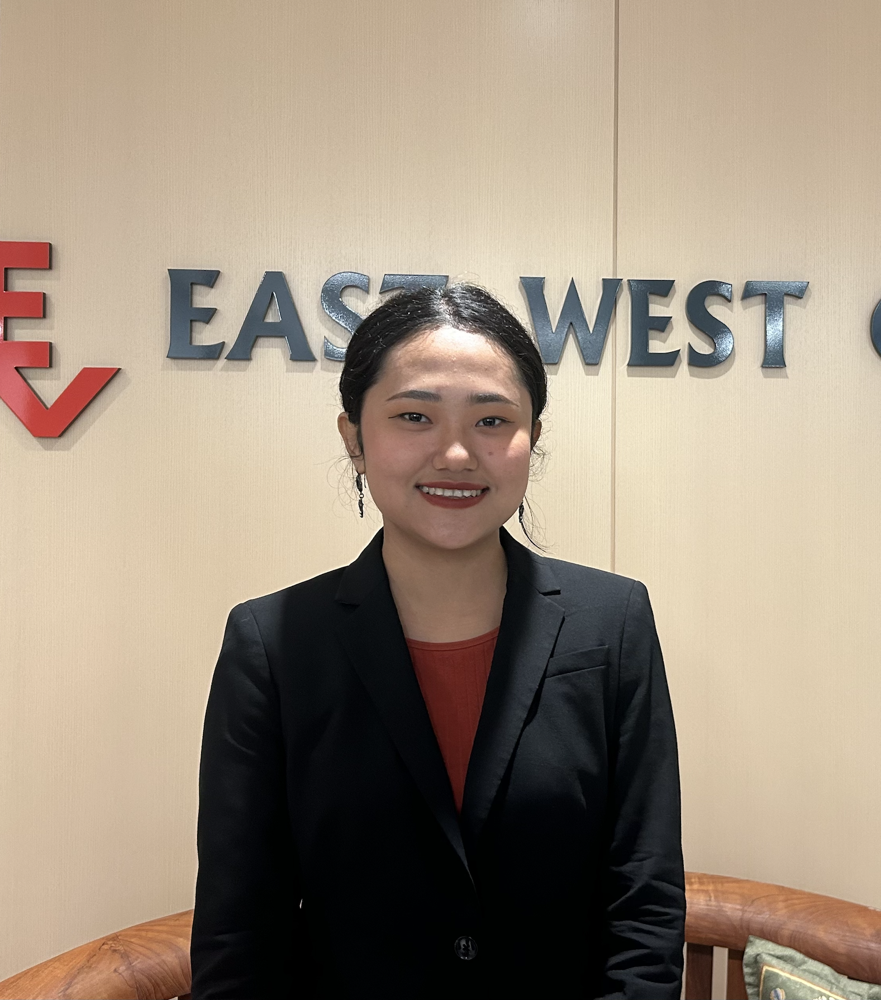

Senior Capstone Project · Statistics and Data Science · Parami University
Myanmar faces a growing plastic pollution crisis, yet individual awareness of how everyday plastic consumption links to broader climate change remains largely unmeasured. While global discourse on plastic waste is well-documented, localised, community-level data from Myanmar is virtually absent in the academic and policy landscape.
This project asks: To what extent do people in Myanmar understand the relationship between their single-use plastic habits and climate change outcomes — specifically CO₂ emissions from open burning and landfill accumulation?
By surveying 304 participants across multiple regions and states, this project bridges the gap between individual consumption behaviour and systemic environmental impact, producing an open dataset and interactive visualisation platform to support further research and public education.
The following 22 questions were presented to all 304 participants. The survey covered plastic usage habits, disposal behaviours, environmental awareness, and climate change perceptions.
As announced to participants, this dataset is made publicly available to support further research, education, and independent analysis. It contains anonymised responses from all 304 participants across 22 survey questions. Feel free to use it for your own exploratory data analysis, visualisations, or academic work — just credit the source.
⚠️ This is a sample dataset. For the full 304-response dataset, email monsoee29@gmail.com.
Download Sample CSVDr. Nwe Nwe Htay Win
Parami University — for her generous guidance, thoughtful mentorship, and continued support throughout this capstone journey.
Dr. Mohamed Megheib
Parami University — for invaluable advice on research design, statistical rigour, and analytical approach.
I extend my heartfelt gratitude to the 304 participants who took time to share their perspectives, habits, and knowledge on plastic usage in Myanmar. Without your honest and thoughtful responses, this research would not exist. Your voices form the foundation of every chart, every insight, and every recommendation on this platform.
I also thank the faculty and staff of the Division of Mathematics and Science at Parami University for providing the academic foundation and resources that made this project possible. I would like to dedicate this work to my family and friends, whose unwavering support, encouragement, and belief in me have carried me through the challenges of my final year. Completing this research required persistence, curiosity, and continuous learning throughout the capstone journey.